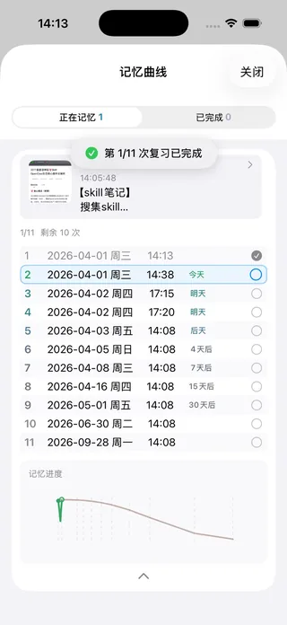

现已在 App Store 上架
记下此刻，
让重要的事
真正留下来
时线日记是一款专为图文记录与长期回顾设计的 iPhone / iPad 应用。截图、照片、文字，按时间线自然串联；彩色标签一触即达；科学记忆曲线让你在最关键的时刻再次回看。
📱
iPhone & iPad🌍
5 种语言🔒
本地优先✨
一次购买永久有效


时线日记是一款专为图文记录与长期回顾设计的 iPhone / iPad 应用。截图、照片、文字，按时间线自然串联；彩色标签一触即达；科学记忆曲线让你在最关键的时刻再次回看。
从瞬间截图到半年后仍记得清晰——时线日记将时间线、彩色标签、全文搜索与科学记忆曲线整合在一个原生 iOS 体验中。
所有记录按日期自动分组，每条显示缩略图、时间戳与内容预览。一眼扫过整天，顶部搜索栏随时全文定位，轻触右下角「＋」即可新建节点。
每个标签自动分配专属颜色，详情页以彩色胶囊直观呈现。支持表情符号标签（如 #✈️），标签列表一页总览全部主题，按标签过滤立即聚焦同类内容。
基于艾宾浩斯遗忘规律，11 个科学复习节点自动排期——5分钟后、30分钟后、12小时后……直到第 180 天。每次复习时间精准显示在列表中，清晰可见今天/明天/后天到期。
备注中的网址可直接点击跳转，无需复制粘贴。截图配合链接，原始来源随时可查。支持粘贴剪贴板内容，附加图片最多 20 张（Pro），详情页左右滑动浏览全部图片。
主页按日期自动分组，点击日期可展开或折叠当天全部内容。每条节点显示缩略图、精确时间戳与文字预览，一眼判断内容，无需逐条打开。顶部搜索栏支持全文检索，任何备注关键词都能被即时召回。
每条节点的详情页展示全幅照片（最多 20 张，Pro），下方彩色 hashtag 标签胶囊一目了然。备注中的网址自动识别为可点击链接，轻触即在 App 内直接跳转——截图来源、参考文章，始终触手可及。左右翻页键在相邻节点间快速切换。
将任意节点加入记忆曲线后，系统立即生成包含 11 个节点的复习计划——每一行都列出具体日期、时间和「今天 / 明天 / N 天后」标注。页面底部还显示遗忘曲线走势图，让你直观感受科学间隔复习的效果。免费版最多 3 项，Pro 无限。

艾宾浩斯研究表明：不复习的情况下，人在学习后 24 小时内会遗忘约 70% 的内容。时线日记将一条普通记录升级为 11 个科学间隔的复习计划，每次提醒都在遗忘发生的前一刻到达。推送时间限定在黄金时段（08:00–21:00），不打扰睡眠与专注时间。
无论学习、工作、创作还是日常记录，时线日记都能成为你最得力的记忆伙伴。
拍下课堂板书或截图重要知识点，用标签按学科章节分类，加入记忆曲线自动安排复习提醒。形成「记录→标签→复习→记住」完整闭环，告别备考前的临时突击。
截图会议重点、需求变更和决策过程，在备注中附上原始链接随时可跳转核实。项目标签让跨周跨月的工作节点串联可查，关键证据链一秒检索。
随手保存灵感截图与片段文字，配上参考链接，标签建立素材库。记忆曲线复习提醒让灵感在最合适的时机重新浮出，每一个稍纵即逝的想法都有机会成为作品。
旅行、美食、健身、亲子日常，在时间线中形成可回看的故事。每张照片配上彩色标签与文字注解，一年后翻回当天，细节清晰如昨。

纵向主信息流，单手即可完成快速创建。从主页到详情，层级清晰；搜索与标签筛选无需多余操作，路边、会议室、随时随地都能流畅使用。
左侧时间线 + 右侧详情的分栏布局，信息密度更高，适合长时阅读与深度整理。记忆曲线的 11 步复习计划在大屏上一览无余。
一键导出本地备份包含全部节点、图片与记忆曲线进度；换机或重装后导入即可完整恢复。数据完全由你掌控，不依赖任何云端服务。
Pro 版支持 Apple 家庭共享，一次购买最多 6 位家庭成员同时享有全部专业权益，记录习惯可以在家庭中一起延续。
如果你也受困于「记了一大堆，却再也找不到」「明明学过，过几天就忘」，时线日记正是为你而生的解法。
聊天截屏、小票、收藏的长文截图散落在相册深处，想用时翻半天翻不到，只能重新搜索。时线日记的时间线主页 + 全文备注搜索，让每一条截图都能被精准唤回。
时间线 + 全文搜索解决备考充电、技能提升都需要「在对的时间再看一眼」。但没有人会记得在第 2 天、第 7 天、第 30 天主动回去复习。记忆曲线帮你在最关键的遗忘节点前推送提醒，把短期印象拉成长期记忆。
11 步记忆曲线解决会议结论、需求变更、决策过程分散在不同聊天、文档和截图里。一条可追溯的时间线 + 彩色标签 + 备注链接，让关键证据链随手可查、一秒定位。
标签 + 链接直跳解决闪过脑子的想法、随手存的图，常常没有下文——因为你不会主动想起去看它。快速记录 + 标签归档 + 记忆曲线提醒，让灵感有机会在未来最需要它的时刻重新被点亮。
快速记录 + 复习提醒解决免费版即可体验核心记录功能。升级 Pro，一次性付费，永久拥有全部专业权益，支持家庭共享。
适合轻度使用，体验核心记录功能，无需付费。
一次买断，永久解锁。适合高频记录、学习备考、工作留痕的用户。
一次购买 · 非订阅 · 支持家人共享